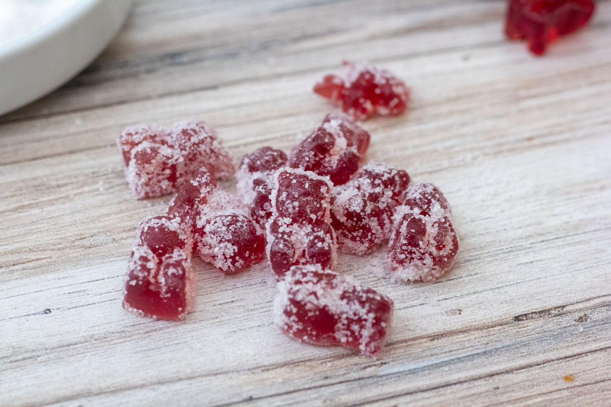

Domácí super kyselé žížalky
 100 porcí
100 porcí 4 hodina
4 hodina Zdroj
Zdroj Vegan
Vegan Sladké
Sladké Kyselé
Kyselé
hodne funny biznys

120 mlvody60 mlkokosového oleje21 gneochucené želatiny170 gochucené želatiny4 g🍂
Ingredience
50 gkyselina jablečná120 gcukr krystalu
Cukrový obal
- drtička
- cedník
- forma na gumídky
Potřebné náčiní
4 g🍂
Nadrtťe si 🍂 v drtičce a pak to rovnoměrně rozlože na plech a dekarboxylujte v troubě na
110 °Cpo dobu40 minut.
60 mlkokosového oleje
V malém hrnci smíchejte
60 mlkokosového oleje a dekarboxylovanou 🍂 a nechte1 - 4 hodinymacenovat s občasným mícháním.
Čím déle macerujete, tím potentnější olej bude.
120 mlvody21 gneochucené želatiny170 gochucené želatiny
Směs přeceďte.
V malém hrnci smíchejte vodu, infůsovaný kokosový olej a želatinu a zahřívejte dokud se složky nesmísí.
Směsí naplňte formu na gumídky.
50 gkyselina jablečná120 gcukr krystalu
Smíchejte kyselinu jablečnou a cukr v misce.
gumídky obalte v cukru a kyselině.